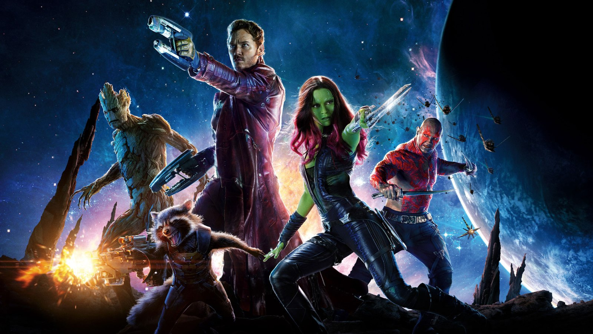

About Rocket
Rocket Raccoon is a fictional character of the Marvel Cinematic Universe. He is a hotheaded, wisecracking, genetically altered, and cybernetically enhanced raccoon. Rocket appears in the movies: Guardians of the Galaxy Vol. 1 and 2, The Avengers Infinity War, and End Game. We first see him in Guardians of the Galaxy Vol. 1, alongside friend and partner-in-crime, Groot.
Rocket and his friends
Rocket's Powers and Skills
- Expert Engineer
- Master Tactician and Strategist
- Expert Pilot
- Skilled Marksman
Rocket's Friends
Rocket's friends are his crew, starting with Groot, then becoming The Guardians of the Galaxy with Peter Quill, Gamora, and Drax, and later with Thor and The Avengers; in Infinity War and End Game. Rocket values the close connections he makes with his friends, as shown when he mourns the death of Groot at the end of Guardians of the Galaxy Vol. 1. Find out more about his friends: